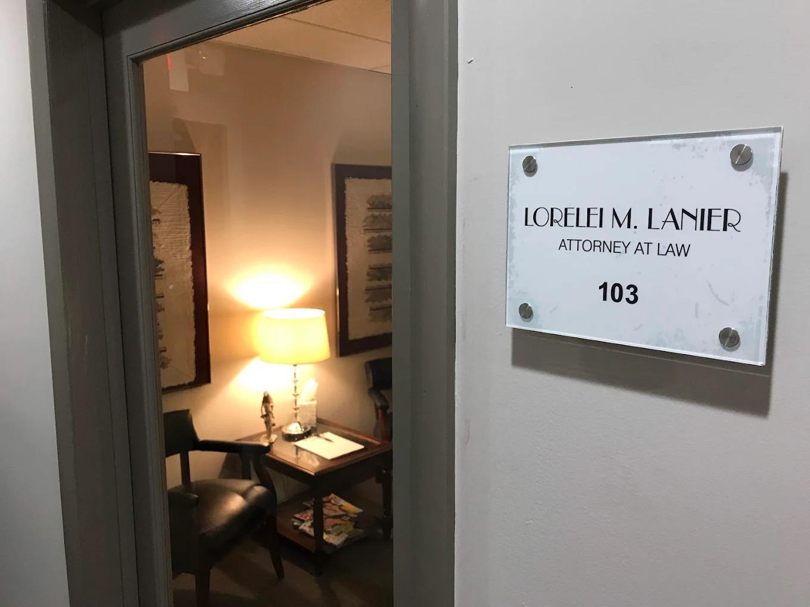

Building My Mom's Law Firm Website with AI
My mother, Lorelei M. Lanier, is an estate planning attorney in Columbus, Ohio. She's been practicing for over 44 years. She's helped hundreds of families with wills, trusts, powers of attorney, and probate. She's one of those attorneys who still makes house calls and charges flat fees because she believes legal help shouldn't be complicated or intimidating.
She never had her own website.
For a long time, she didn't need one. For years, her listing was in the Yellow Pages — and that worked. Clients found her through the Columbus Bar Association referral service, and word of mouth did the rest. When the Yellow Pages stopped being a thing, her Google Business listing took over. A couple of years ago, I helped her out by uploading some photos of her office to the listing so people could at least see the place before walking in.
But the world has changed again. People search for attorneys online now. AI assistants like ChatGPT and Perplexity are answering questions like "Who is an estate planning attorney near me in Columbus?" And if you don't have a website, you don't exist in those answers.

So I decided to build her one. With AI.
The Same Genie, Different Wish
If you read my first blog post, you know I've been using Claude Code to build things I never thought I could. I built an interactive presentation for the Chamber. I built this very website. So when I realized my mom needed a web presence, the answer was obvious.
I sat down with Claude Code and described what I wanted: a professional, clean, fast-loading website for an estate planning attorney in Columbus, Ohio. Multiple pages — a homepage, about page, practice areas, service areas, and a contact page with a working form. I wanted it to look like a real law firm website, not a template.
For photos, I used the shots I had uploaded to her Google Business listing a couple of years ago — pictures of her office on Riverside Drive. Claude helped me pull them together, resize them, and build the whole site around them.

The result: loreleimlanierlaw.com
It Didn't Stop at "Build a Website"
Once the site was live, I realized that just having a website isn't enough. It needs to be found. So I went deeper — and this is where things got really interesting.
Using Claude Code, I implemented a full SEO and content optimization plan across five phases:
- Schema markup — structured data so Google understands exactly who Lorelei is, what she does, and where she's located. FAQPage schema, LocalBusiness schema, BreadcrumbList schema, and an ItemList for all her practice areas.
- Expanded practice areas — from 8 services to 10, each with detailed descriptions, Ohio Revised Code citations, and "Quick Answer" paragraphs designed to be quotable by AI search engines.
- 11 FAQ questions — covering everything from "What happens if I die without a will in Ohio?" to "How often should I update my estate plan?" Each answer is thorough enough to be cited by an AI assistant.
- GEO (Generative Engine Optimization) — a new concept. I created an
llms.txtfile, which is a structured summary of the practice specifically for AI crawlers. I added Ohio Revised Code citations throughout. The idea is that when someone asks Perplexity or ChatGPT about estate planning in Columbus, Lorelei's site has the kind of authoritative, fact-dense content that AI engines want to cite. - Google Maps integration — an embedded map on the contact page so people can find her office on Riverside Drive.
All of this — the entire site, every page, the SEO, the schema, the legal citations, the contact form — was built by me and Claude Code. No developer. No agency. No monthly fee.
What This Means
My mom has been an attorney for 44 years. She's excellent at what she does. But she never had the tools, the time, or honestly the interest to build a website. And hiring someone to do it would have cost thousands of dollars for something that might not even reflect who she actually is.
With AI, I was able to build her a site that's fast, professional, SEO-optimized, and — most importantly — accurate. It sounds like her. It describes her practice the way she would describe it. Because I know her, and I could tell the AI exactly what to build.
The best person to build a website for a small business isn't always a web developer. Sometimes it's someone who knows the business and has access to the right tools.
If you have a family member, a friend, or a small business in your life that doesn't have a web presence — you might be surprised at what you can do for them. You don't need to know how to code. You just need to know what to ask for.
The genie is listening.
← Back to Blog